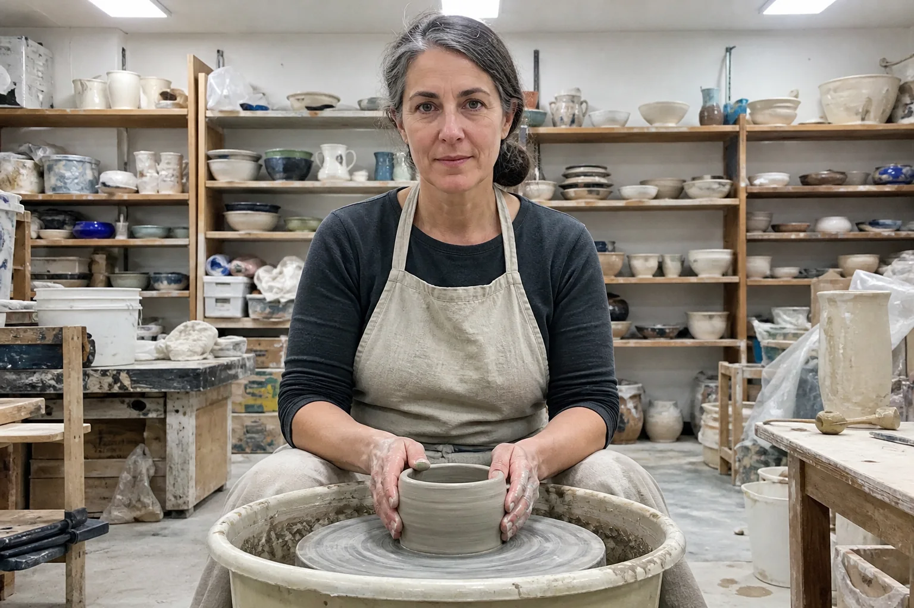
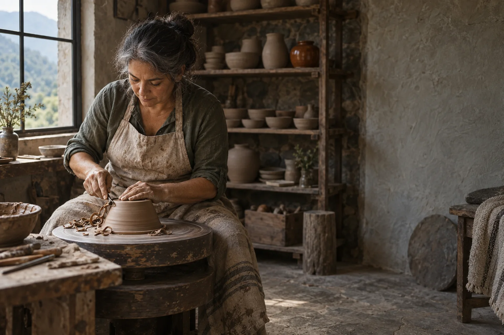
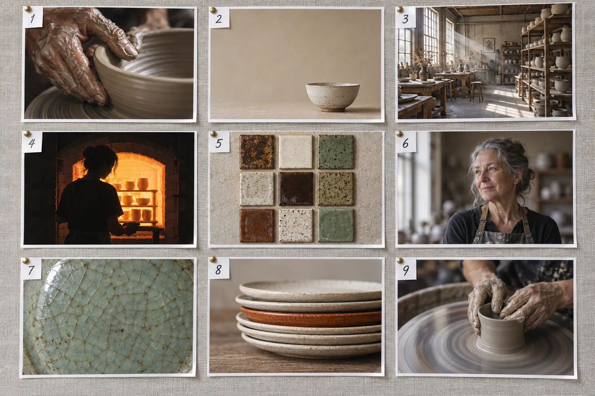
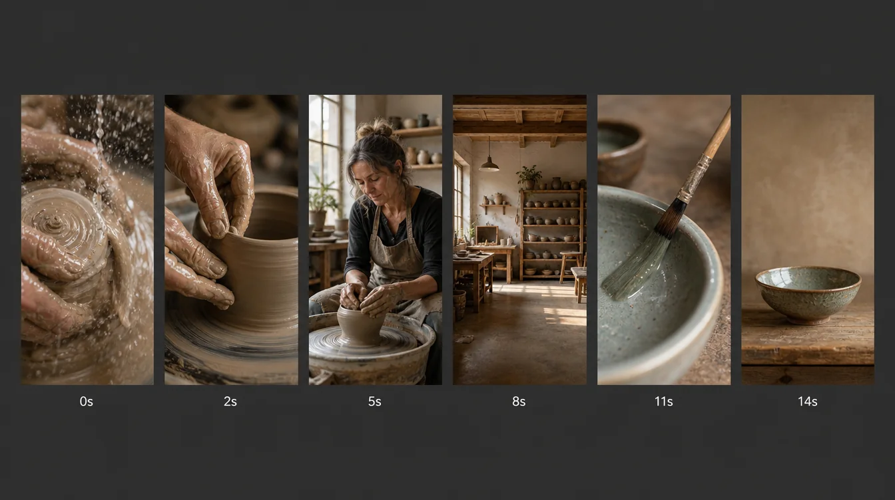
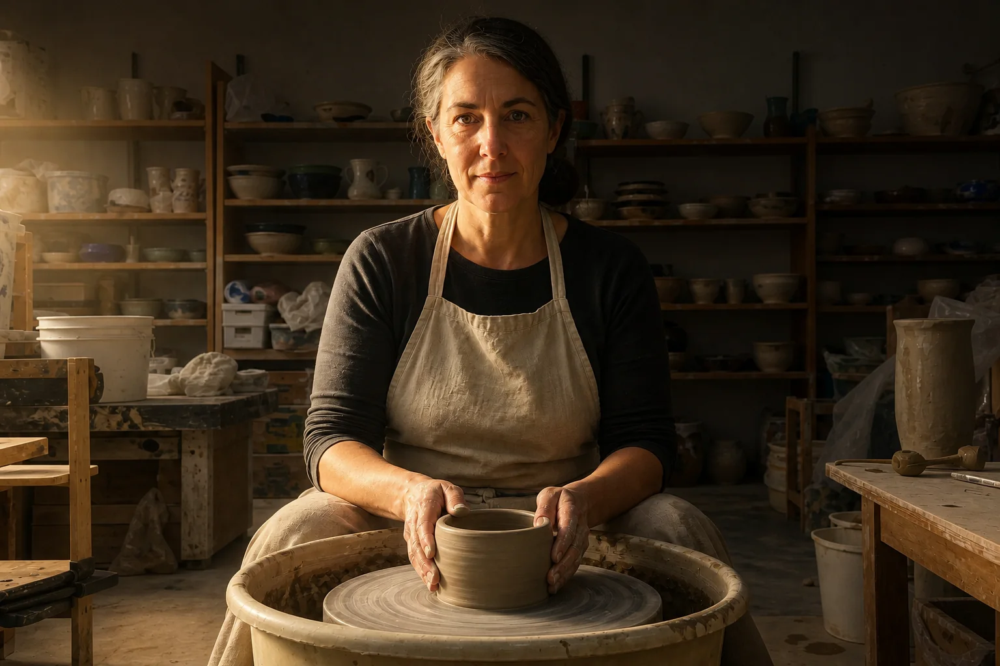
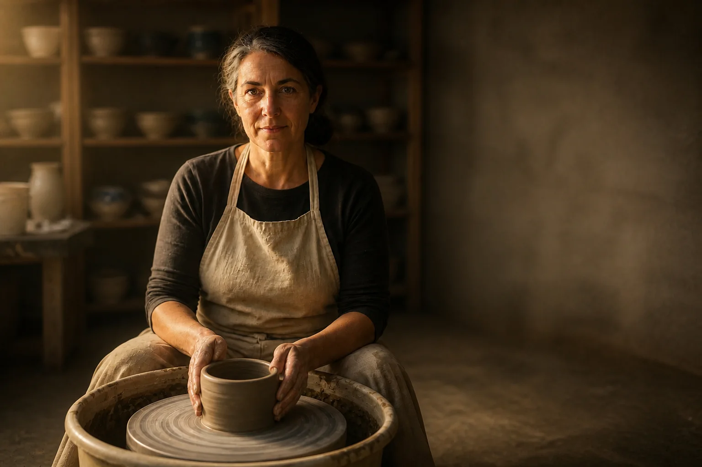
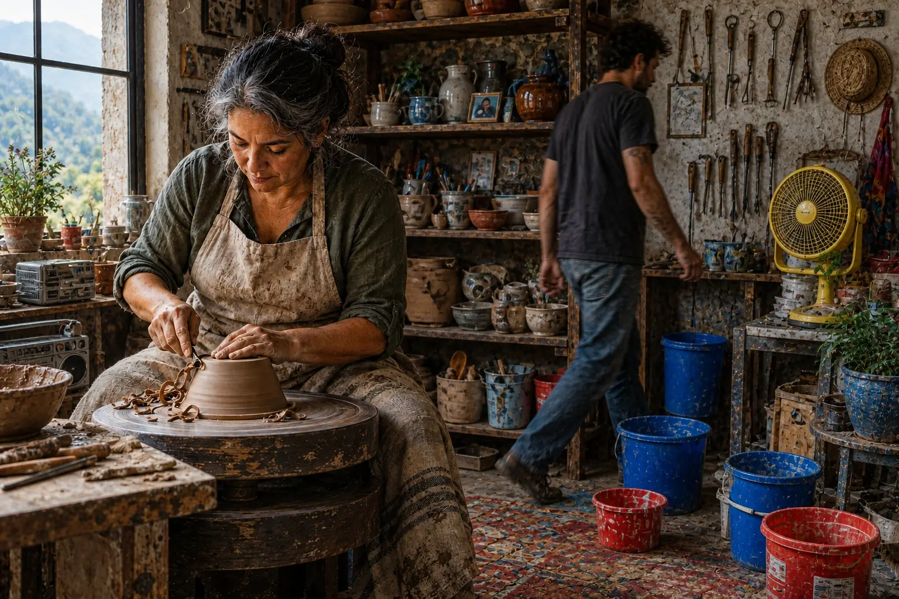
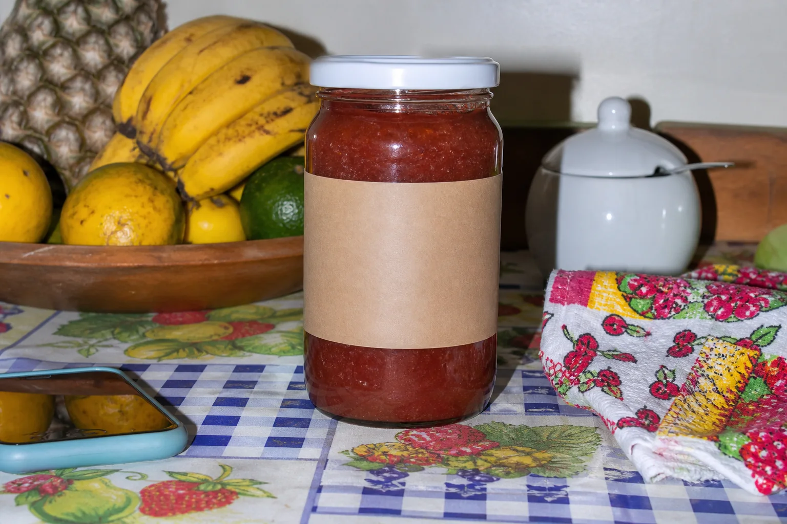
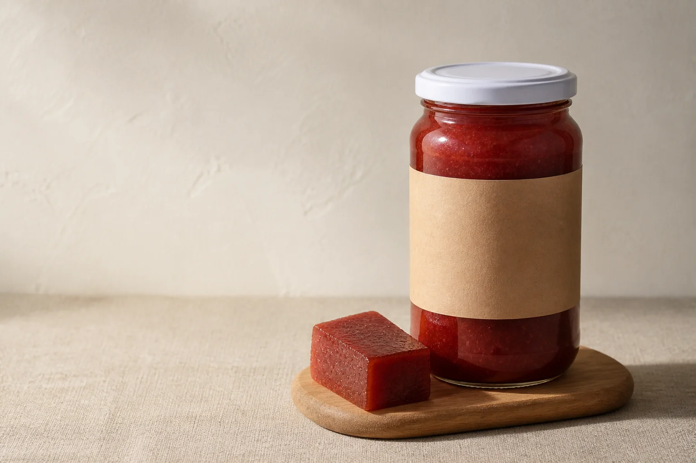

Todo mundo tem uma pasta de referências. Pouca gente aprende com ela. A diferença entre inspiração e treino está numa mudança de frase: sair de “eu gosto disso” para “eu consigo explicar por que isso funciona”. Quando você consegue explicar, consegue repetir — e consegue perceber quando o seu próprio trabalho está bonito por acaso ou certo de propósito.

Prompt usado
Amateur snapshot of a woman ceramist in her 50s with gray-streaked dark hair in a low bun and a linen apron, working clay on a pottery wheel in a workshop, shelves of pots behind her. Flat, even overhead fluorescent light with no direction and no shadows, camera at eye level straight on, she is perfectly centered, everything sharp from front to back, slightly cluttered frame, plain phone-camera look. No text.

Prompt usado
Editorial documentary photograph of a ceramist, a Brazilian woman in her 50s with gray-streaked dark hair in a low bun, sleeves rolled up, clay-dusted linen apron, trimming a pot on a kick wheel in a rustic stone workshop in the mountains of São Paulo state. Camera slightly above eye level, 50mm lens at f/2.8. Light: a single large window on the left is the only source, soft but directional, about 4500K; the right side of her face and the room fall into gentle shadow. Background: wooden shelves of unfired pots, softly out of focus. Composition: she and the wheel occupy the left two-thirds; her hands and the pot are the brightest area, placed near the lower-left third intersection; calm empty wall on the right. Palette: clay brown, off-white and muted gray-green, with one accent of rust-orange from a glazed pot on the shelf. Fine film grain. Calm, focused, unhurried mood. No text.
Duas gerações independentes do mesmo assunto: uma ceramista no torno. À esquerda, uma tentativa sem decisões (luz chapada, sujeito no centro, tudo nítido). À direita, a referência que vamos desmontar neste módulo. As duas têm uma ceramista parecida, de cabelo grisalho preso e avental de linho, o mesmo ofício, quase o mesmo lugar — a diferença está inteira em decisões que dá para nomear. No tópico 5 você vai ver a primeira virar a segunda, uma decisão por vez.
1O board que ensina (não só inspira)
O que é
Na trilha 1 você começou um board. Agora ele sobe de nível: 10 referências, cada uma passando por três filtros. Ela parece cara (produção cuidada, nada de acaso)? Parece deliberada (dá para sentir que alguém decidiu a luz e o quadro)? Está no nível que você quer alcançar — um pouco acima do que você faz hoje?
Onde procurar referências fortes
| Fonte | O que ela ensina melhor | Cuidado |
|---|---|---|
| Anúncios de moda, beleza, tecnologia, marcas premium | luz controlada, produto como herói, espaço para texto | copiar a marca em vez de entender a decisão |
| Filmes de moda e trechos de cinema | luz motivada, composição, ritmo de cortes | escolher pela história, não pelo quadro |
| Vídeos curtos com gancho forte | os 2 primeiros segundos, hierarquia rápida | confundir viral com bem-feito |
| Fotojornalismo e documental | momento, gesto, luz natural | achar que “natural” é sem decisão |
| Criadores de imagem com IA consistentes | séries coerentes, prompts com estilo travado | salvar conteúdo de meme ou efeito pelo efeito |
Por que aprender
O olho aprende por comparação repetida. Se o board tem 200 imagens de qualidade misturada, você treina a média. Se tem 10 imagens excelentes que você olhou de verdade, você treina o topo. Menos referências, mais atenção.
Sinais de que uma referência não deveria estar no board:
- Você salvou pelo assunto (“adoro cerâmica”), não pela forma como foi fotografado.
- O efeito é o protagonista: filtro pesado, distorção, brilho que chama mais atenção do que a coisa mostrada.
- Você não consegue apontar uma única decisão que faz a imagem funcionar.
- Ela está no mesmo nível do que você já faz — não puxa você para cima.
- É tão parecida com outra do board que não ensina nada novo.
Cortar dói, mas é aqui que o gosto começa a aparecer: escolher o que fica é a primeira decisão visual do projeto. Se você tem 40 candidatas, faça duas rodadas de corte — primeiro para 20, depois para 10 — e, em cada rodada, diga em voz alta por que a que saiu é mais fraca que a que ficou.
Conceitos-chave em ação

Prompt usado
Overhead photograph of a reference mood board for a handmade ceramics studio: nine printed photographs arranged in a neat 3x3 grid on a light-gray linen pinboard, each print with a small white paper tab in its top-left corner showing a handwritten number from 1 to 9, reading left to right, top to bottom. 1: extreme close-up of wet clay-covered hands shaping a bowl on a spinning wheel, raking side light. 2: a single off-white ceramic bowl on a plain sand-colored background with huge empty space around it. 3: wide shot of a sunlit pottery workshop with shelves of unfired pots and beams of window light through dust. 4: silhouette of a woman against the orange glow of an open kiln, very high contrast. 5: top-down flat lay of glazed tiles in a tidy grid, earthy brown, cream and sage palette. 6: portrait of an older ceramist at eye level, soft window light from the left, blurred background. 7: macro detail of crackled celadon glaze. 8: a stack of neutral cream plates with a single rust-orange plate in the middle. 9: motion blur of the spinning wheel with the potter's hands sharp. Soft even daylight on the board, realistic paper prints with slight curl, no other text.
Board de exemplo para um ateliê de cerâmica fictício, com nove peças numeradas. Repare na variedade: detalhe de mãos (1), produto isolado com muito espaço (2), ambiente com raios de luz (3), silhueta contra o forno (4), vista de cima em grade (5), retrato com janela (6), macro de textura (7), acento de cor único (8) e movimento (9). No próximo tópico cada uma ganha a sua anotação.
2Anotar: uma linha, um elemento
O que é
A regra é curta: uma linha por referência, sobre um elemento só. Escolha o que mais pesa naquela imagem — luz, enquadramento, composição, ritmo, tipografia — e escreva no formato elemento → efeito. Uma linha obriga a escolher; três parágrafos deixam você descrever tudo sem decidir nada.
Por que aprender
✓ Anotação que treina
- Fundo liso + contraste alto → o sujeito é lido na hora
- Um único acento de cor entre neutros → o olho vai direto para ele
- Luz rasante lateral → a textura da argila aparece
- Mãos nítidas com roda borrada → movimento sem perder o foco
✗ Anotação que não treina
- Linda!
- Amei as cores
- Muito profissional
- Tudo nessa foto é perfeito
Conceitos-chave em ação
O board de cerâmica, anotado
| # | Elemento que decide | Anotação (elemento → efeito) |
|---|---|---|
| 1 | Luz | Luz rasante de lado → cada sulco da argila vira relevo; dá vontade de tocar |
| 2 | Composição | Objeto pequeno num mar de espaço vazio → leitura premium, calma |
| 3 | Luz / atmosfera | Raios de janela com poeira → o ambiente ganha profundidade e tempo lento |
| 4 | Contraste | Silhueta contra o brilho do forno → drama sem mostrar rosto |
| 5 | Ângulo | Vista de cima em grade → ordem, catálogo, sistema |
| 6 | Profundidade de campo | Fundo desfocado com janela lateral → a pessoa é o único assunto |
| 7 | Plano | Macro de textura → prova de qualidade artesanal |
| 8 | Cor | Um prato ferrugem entre neutros → o acento é o herói |
| 9 | Movimento | Roda borrada, mãos nítidas → energia sem perder o foco |
3Desmontar uma referência em seis camadas
O que é
Anotar é olhar um elemento. Desmontar é olhar todos, na ordem. Escolha a referência do board que mais te incomoda (no bom sentido: “como fizeram isso?”) e responda às seis camadas abaixo. Para uma foto, “estrutura” e “ritmo” descrevem o caminho do olho dentro do quadro; para vídeo ou carrossel, descrevem a sequência (tópico 4).
As seis camadas e a pergunta de cada uma
| Camada | Pergunta | Na referência da ceramista |
|---|---|---|
| Estrutura | Onde o olho entra, por onde passa, onde para? | entra nas mãos claras, sobe pelo rosto, descansa na parede vazia à direita |
| Planos | Close, médio, geral ou detalhe? Por quê? | plano médio: mostra ofício e pessoa ao mesmo tempo |
| Ritmo | Tenho tempo de olhar ou sou empurrado? | lento: um único foco e muito respiro |
| Foco e acentos | Qual é o assunto principal? Qual é o segundo olhar? | 1º: mãos e pote; 2º: o pote ferrugem na prateleira |
| Luz | Fonte, direção, qualidade, temperatura? | janela única à esquerda, suave e direcional, ~4500K; a luz cai da esquerda para a direita, e a parede da direita fica lisa, clara e vazia |
| Cor | Qual é a base? Qual é o acento? | base de barro, off-white e verde-acinzentado; acento ferrugem |
Por que aprender
A ordem importa. Começar pela estrutura (o caminho do olho) obriga você a olhar a imagem inteira antes de se apaixonar por um detalhe. Terminar pela cor evita o erro mais comum de quem está começando: achar que a imagem funciona “por causa do filtro”, quando quase sempre funciona por causa da luz e do foco. Se você tirasse a cor desta referência e a deixasse em preto e branco, ela continuaria boa — e isso diz muito sobre onde está a força dela.
Prompt usado
Editorial documentary photograph of a ceramist, a Brazilian woman in her 50s with gray-streaked dark hair in a low bun, sleeves rolled up, clay-dusted linen apron, trimming a pot on a kick wheel in a rustic stone workshop in the mountains of São Paulo state. Camera slightly above eye level, 50mm lens at f/2.8. Light: a single large window on the left is the only source, soft but directional, about 4500K; the right side of her face and the room fall into gentle shadow. Background: wooden shelves of unfired pots, softly out of focus. Composition: she and the wheel occupy the left two-thirds; her hands and the pot are the brightest area, placed near the lower-left third intersection; calm empty wall on the right. Palette: clay brown, off-white and muted gray-green, with one accent of rust-orange from a glazed pot on the shelf. Fine film grain. Calm, focused, unhurried mood. No text.
A referência desmontada na tabela acima. As mãos e o pote são a área mais clara e ficam no terço inferior esquerdo; a janela à esquerda é a única fonte de luz; as prateleiras ao fundo ficam mais suaves que a pessoa; um pote cor de ferrugem na prateleira é o segundo ponto de atenção.
Conceitos-chave em ação
4Estrutura e ritmo numa sequência
O que é

Prompt usado
A clean contact sheet on a dark gray background showing six vertical 9:16 frames from a 15-second social video ad for a handmade ceramics studio, arranged in one horizontal row with equal spacing, each frame with a small white timestamp printed below it: '0s', '2s', '5s', '8s', '11s', '14s'. Frame 0s: extreme close-up of wet clay spinning between fingers, water splashing, very dynamic. Frame 2s: close-up of hands pulling up the wall of a pot. Frame 5s: medium shot of a middle-aged woman ceramist at the wheel, calm, window light. Frame 8s: wide shot of the quiet workshop with shelves of pots. Frame 11s: slow detail of a brush applying glaze. Frame 14s: a finished glazed bowl alone on a wooden table with empty space above it. Consistent warm natural light and earthy palette across all frames. No other text.
Folha de contato de um vídeo curto de 15 segundos para o ateliê fictício, com um quadro de cada momento. Abre com um close muito dinâmico da argila girando (o gancho), passa por close das mãos, plano médio da ceramista, plano geral do ateliê e detalhe do esmalte, e fecha na tigela pronta com espaço livre em cima — onde entraria o texto final.
Por que aprender
Repare no desenho: gancho rápido nos 2 primeiros segundos (movimento, textura, algo que prende), meio mais lento (planos que deixam a pessoa e o lugar respirarem) e fim limpo (um único assunto com espaço para a mensagem). É a mesma lógica da foto — um foco por vez —, só que distribuída no tempo. Uma série de imagens para feed ou um carrossel segue a mesma regra: a primeira imagem é o gancho, as do meio constroem, a última fecha.
Conceitos-chave em ação
Planos numa sequência: qual trabalho cada um faz
| Plano | O que mostra | Trabalho na sequência |
|---|---|---|
| Detalhe | mãos, textura, tecido, material | gancho sensorial; prova de qualidade |
| Close | rosto ou produto | emoção, identificação |
| Médio | pessoa da cintura para cima | quem faz e o que faz |
| Geral | o lugar inteiro | contexto, pausa, respiro |
- Assista sem som: sem a música, você enxerga se o ritmo vem das imagens ou só da trilha.
- Reveja em 0,5×: os cortes que você nem percebia aparecem, e dá para contar os segundos de cada plano.
- Faça prints dos quadros mais fortes: eles viram novas referências para o board — já com a anotação.
5Estudo visual: recriar mudando um fator por vez
O que é
Um estudo visual não é copiar uma imagem inteira — copiar tudo ensina a imitar, não a decidir. É escolher uma técnica da referência — o estilo de luz, a composição, o ritmo dos primeiros segundos — e aplicá-la de propósito numa imagem sua. Com IA isso fica muito prático: você gera uma tentativa e depois pede edições que mudam só um fator, conferindo o efeito a cada passo.
Por que aprender
Prompt usado
Amateur snapshot of a woman ceramist in her 50s with gray-streaked dark hair in a low bun and a linen apron, working clay on a pottery wheel in a workshop, shelves of pots behind her. Flat, even overhead fluorescent light with no direction and no shadows, camera at eye level straight on, she is perfectly centered, everything sharp from front to back, slightly cluttered frame, plain phone-camera look. No text.

Instrução de edição usada (sobre a imagem-base)
Relight this entire image so the change of light is dramatic and obvious at first glance: switch OFF all the ceiling fluorescent tubes (they are dark now) and make the room much darker overall. The ONLY light is a single large window just outside the frame on the LEFT, low warm afternoon daylight around 4500K, entering as a clear directional beam: the left side of her face, her left arm, her hands and the pot are brightly lit, while the right side of her face falls into deep shadow and the right half of the room and the shelves on the right sink into dim shadow. Visible light falloff from left to right, soft shadows cast to the right. Keep the same woman, pose, camera position, centered framing, background objects and colors identical.

Instrução de edição usada (sobre a imagem-base)
Change ONLY the framing, camera and depth of field of this image: move the camera slightly above eye level and to the right so the woman and the wheel sit on the LEFT two-thirds of the frame, her hands and the pot near the lower-left third intersection, a calm empty stretch of wall on the right; 50mm look at f/2.8 so the shelves behind her fall softly out of focus. Keep the same woman, pose, the same single window light from the left and the same colors.
Prompt usado
Editorial documentary photograph of a ceramist, a Brazilian woman in her 50s with gray-streaked dark hair in a low bun, sleeves rolled up, clay-dusted linen apron, trimming a pot on a kick wheel in a rustic stone workshop in the mountains of São Paulo state. Camera slightly above eye level, 50mm lens at f/2.8. Light: a single large window on the left is the only source, soft but directional, about 4500K; the right side of her face and the room fall into gentle shadow. Background: wooden shelves of unfired pots, softly out of focus. Composition: she and the wheel occupy the left two-thirds; her hands and the pot are the brightest area, placed near the lower-left third intersection; calm empty wall on the right. Palette: clay brown, off-white and muted gray-green, with one accent of rust-orange from a glazed pot on the shelf. Fine film grain. Calm, focused, unhurried mood. No text.
O estudo em sequência. O passo 1 é uma edição da tentativa pedindo apenas a troca da luz: fluorescentes apagadas, ateliê escurecido e uma luz quente de janela vinda da esquerda — o enquadramento central continua igual. O passo 2 é uma edição do passo 1 pedindo apenas enquadramento e foco: a ceramista vai para a esquerda, abre-se um trecho de parede vazia à direita e as prateleiras ficam mais suaves. A referência, gerada à parte, fica ao lado para comparar. Em cada passo, pergunte: o que mudou na sensação? Qual passo aproximou mais da referência?
Conceitos-chave em ação
Estudo rápido de 15–20 minutos
- Escolha uma técnica da referência e escreva-a numa frase (“janela única lateral com o lado oposto em sombra”).
- Gere a sua tentativa do assunto, sem se preocupar com a técnica.
- Peça uma edição que muda só o fator estudado. Mantenha todo o resto igual por escrito no prompt.
- Compare com a referência lado a lado. Anote em uma linha o que mudou na sensação.
- Se sobrar tempo, repita com o fator seguinte (enquadramento, depois cor).
6Cinco regras pessoais
O que é
Depois do board anotado e do estudo, escreva cinco regras visuais pessoais. Não são leis universais: são as conclusões que você tirou do que observou. Uma boa regra é curta, dá para verificar numa imagem e muda o que você escreve no prompt.
Exemplos de regras e como viram prompt
| Regra | De onde veio (observação) | Como entra no prompt |
|---|---|---|
| Um foco principal por quadro | as anotações 2, 6 e 8 do board | “only one subject”, “remove other objects”, profundidade de campo rasa |
| Fundo limpo vence efeito complexo | o produto isolado (2) lido mais rápido que qualquer montagem | “plain warm off-white wall”, “seamless background” |
| Luz com direção sempre | o estudo: só a janela lateral já mudou tudo | “single window light from the left, shadow falling right” |
| Um acento de cor, nunca dois | o prato ferrugem (8), o pote ferrugem da referência | “neutral palette, X as the only accent” |
| Um quadro forte vale mais que cinco médios | a folha de contato: o fim limpo é o que fica na memória | gerar variações e publicar só a melhor |
Por que aprender
Prompt usado
Editorial documentary photograph of a ceramist, a Brazilian woman in her 50s with gray-streaked dark hair in a low bun, sleeves rolled up, clay-dusted linen apron, trimming a pot on a kick wheel in a rustic stone workshop in the mountains of São Paulo state. Camera slightly above eye level, 50mm lens at f/2.8. Light: a single large window on the left is the only source, soft but directional, about 4500K; the right side of her face and the room fall into gentle shadow. Background: wooden shelves of unfired pots, softly out of focus. Composition: she and the wheel occupy the left two-thirds; her hands and the pot are the brightest area, placed near the lower-left third intersection; calm empty wall on the right. Palette: clay brown, off-white and muted gray-green, with one accent of rust-orange from a glazed pot on the shelf. Fine film grain. Calm, focused, unhurried mood. No text.

Instrução de edição usada (sobre a imagem-base)
Break this photograph on purpose by adding visual noise, while keeping the same ceramist, her pose, the wheel and the window light: add a second person walking behind her, several bright blue and red plastic buckets on the floor, a bright yellow electric fan, tools hanging on the wall, a colorful patterned rug, a radio and extra objects on every surface, and make everything equally sharp from front to back as if shot at f/11. The frame should feel busy and scattered.
A imagem da direita é uma edição da referência pedindo, de propósito, ruído visual: outra pessoa ao fundo, baldes e objetos coloridos, tudo nítido. A ceramista e a luz continuam lá — mas o olho não sabe mais para onde ir. É a regra “um foco por quadro” vista pelo avesso.
Conceitos-chave em ação
Postura de quem pensa visualmente — as regras só funcionam com este hábito por trás:
- Para cada elemento, pergunte: por que isso está aqui?
- Tire tudo o que não fortalece a ideia principal.
- Compare o seu resultado com a referência, lado a lado — não de memória.
- Não justifique decisão fraca (“ficou assim, mas o cliente nem vai notar”). Refaça.
Uma regra só entra no caderno depois de passar por um teste simples: gere a mesma imagem com e sem ela. Se a versão sem a regra não fica visivelmente pior, a regra é enfeite — reescreva-a ou troque por outra. Com o tempo, as regras mudam: a lista de cinco é um retrato do seu olho hoje, não um contrato. Revise a cada projeto e anote a data de cada versão.
7Upgrade de portfólio: aplicar as regras numa peça real
O que é
A última etapa transforma observação em resultado. Escolha uma peça do seu portfólio que hoje te incomoda e faça uma de duas coisas: substitua-a pelo seu estudo visual, ou refaça-a aplicando as cinco regras. Documente o antes, o depois e qual regra fez mais diferença.
Por que aprender

Prompt usado
Amateur product photo of a glass jar of homemade guava paste (goiabada cascão) with a plain kraft paper label, standing in the middle of a busy kitchen table next to a fruit bowl, a patterned tablecloth, a cellphone, a sugar bowl and a colorful dish towel. Direct on-camera flash, harsh flat light with a hard shadow behind the jar, camera straight on at table height, jar perfectly centered, saturated colors. No text except the plain label.

Instrução de edição usada (sobre a imagem-base)
Fully re-shoot this ENTIRE product photo applying five visual rules. 1) One clear focus: keep only the same guava-paste jar plus one cut slice of guava paste on a small wooden board; remove every other object. 2) Clean background: a plain warm off-white plaster wall and a natural linen surface. 3) One light: a single soft window light from the left, about 4000K, with a gentle shadow falling to the right; no flash. 4) Restrained palette: off-white, natural wood and linen, with the deep red of the guava as the only accent. 5) Composition: the jar on the right third, calm negative space on the left for a headline, camera slightly above the jar, 85mm look. Keep the same jar shape and kraft label.
O “depois” é uma edição do “antes” que aplica, uma a uma, as cinco regras da tabela: um foco (só o pote e uma fatia na tábua), fundo limpo, luz de janela com direção, um acento de cor (o vermelho da goiabada) e composição com espaço livre para título. Abra “Prompt usado” e veja as regras escritas como instruções.
Conceitos-chave em ação
O que cada regra mudou
| Regra | Antes | Depois |
|---|---|---|
| Um foco | pote disputando atenção com fruteira, celular, pano | só o pote e uma fatia |
| Fundo limpo | mesa e toalha estampadas | parede clara e linho |
| Luz com direção | flash direto, sombra dura atrás | janela à esquerda, sombra suave para a direita |
| Um acento | várias cores saturadas | neutros + vermelho da goiabada |
| Espaço para mensagem | pote no centro, sem lugar para texto | pote no terço direito, respiro à esquerda |
Perguntas de reflexão para o caderno:
- Que padrões visuais eu passei a notar que antes não via?
- Qual regra teve mais impacto no meu trabalho?
- O que eu melhorei no portfólio por causa desta lição?
- Onde eu ainda me sinto inseguro?
Prática guiada: um estudo visual completo em 30 minutos
Você vai passar pelo ciclo inteiro com uma única referência: anotar, desmontar, recriar um fator, tirar uma regra.
Roteiro
- Escolha no seu board a referência que você mais gostaria de saber fazer.
- Escreva a anotação de uma linha (elemento → efeito).
- Preencha as seis camadas (estrutura, planos, ritmo, foco, luz, cor). Se quiser ajuda, use o prompt de desmontagem abaixo com um assistente que aceite imagem.
- Gere uma tentativa do seu assunto sem pensar na técnica.
- Peça a edição que muda só o fator estudado (molde abaixo). Compare com a referência.
- Escreva uma regra pessoal que saiu do estudo.
Desmontagem assistida de uma referência
Objetivo: Pedir a um assistente com visão (ChatGPT, Claude, Gemini) uma análise em seis camadas — para comparar com a sua, não para substituí-la.
Analise a imagem anexada como um diretor de fotografia. Responda em seis camadas, com uma ou duas frases cada: 1) Estrutura: onde o olho entra, por onde passa e onde descansa. 2) Plano e ângulo: qual é e que trabalho faz. 3) Ritmo: a imagem é calma ou empurra o olhar? Por quê? 4) Foco e acentos: assunto principal e segundo ponto de atenção. 5) Luz: fonte, direção, qualidade (dura/suave) e temperatura aproximada em Kelvin. 6) Cor: cor de base e cor de acento. Depois, diga qual é a UMA decisão que mais faz esta imagem funcionar, no formato 'elemento → efeito'. Por fim, escreva essa decisão como uma frase de prompt em inglês.
Como verificar: Compare com a sua desmontagem. Onde vocês discordam, volte à imagem e decida quem está certo — é nesse ponto que o olho treina.
Molde de edição: um fator por vez
Objetivo: Aplicar na sua tentativa só a técnica estudada, mantendo todo o resto.
Change ONLY the <fator: lighting / framing and composition / color palette> of this image: <descrição precisa da técnica da referência, com direção, qualidade e posição>. The difference must be obvious. Keep the same <pessoa ou objeto>, pose, camera position, background objects and <os outros fatores> identical.
Como verificar: Só o fator pedido mudou? Se o rosto, a pose ou o fundo também mudaram, repita a lista do que deve ficar igual, mais explícita.
Lição de casa
Tudo entra no caderno de olhar. As regras que você escrever aqui serão aplicadas à série do projeto final.
Nível básico (obrigatório)
- Monte (ou revise) um board de 10 referências que passem nos três filtros: caras, deliberadas, no nível que você quer.
- Escreva uma anotação de uma linha, sobre um elemento só, embaixo de cada uma.
- Desmonte uma referência nas seis camadas.
- Faça um estudo visual de um fator: tentativa + uma edição. Compare com a referência.
- Escreva cinco regras pessoais, cada uma com a observação de onde veio.
Nível avançado (desafio)
- Estudo de três passos: repita o estudo mudando luz, depois enquadramento, depois cor — cada fator como edição separada da tentativa. Monte a grade e escreva qual fator aproximou mais da referência.
- Upgrade de portfólio: refaça uma peça antiga aplicando as cinco regras e escreva a tabela “regra → antes → depois”.
- Sequência: escolha um vídeo curto que você admira, faça prints de 6 quadros, marque os segundos e descreva gancho, meio e fim.
Entregue/guarde: No caderno: o board com as 10 anotações, a desmontagem em seis camadas, o estudo (imagens + prompts), as cinco regras e, se fez, o antes/depois do portfólio com as respostas de reflexão.
Teste sua decisão
1. Qual destas anotações de board treina mais o olho?
Consultar a explicação
Uma linha, um elemento, um efeito. Elogio genérico não obriga você a ver nada; listar tudo evita escolher o que realmente decide a imagem.
2. No estudo visual, você mudou luz, enquadramento e paleta de uma vez e a imagem ficou ótima. Qual é o problema?
Consultar a explicação
O estudo existe para ligar causa e efeito. Mudando um fator por vez, você vê o que cada um faz — e é disso que saem as regras pessoais.
3. Na desmontagem, a pergunta “eu tenho tempo de olhar ou estou sendo empurrado?” mede qual camada?
Consultar a explicação
Ritmo é a velocidade com que a imagem muda (ou, numa foto, quanta coisa disputa o olhar). Ritmo lento sugere confiança e valor; ritmo rápido, urgência e energia.
Responder não marca a leitura nem bloqueia o próximo módulo.
O que levar desta aula
- Troque “eu gosto” por “eu consigo explicar por que funciona”.
- Board que ensina: 10 referências caras, deliberadas e acima do seu nível — cada uma com uma linha: elemento → efeito.
- Desmonte em seis camadas: estrutura, planos, ritmo, foco, luz, cor.
- Estudo visual = uma técnica, um fator por vez, comparado lado a lado com a referência.
- Cinco regras pessoais escritas viram critério — e viram texto de prompt.
- Prove a evolução com um antes/depois do seu próprio portfólio.